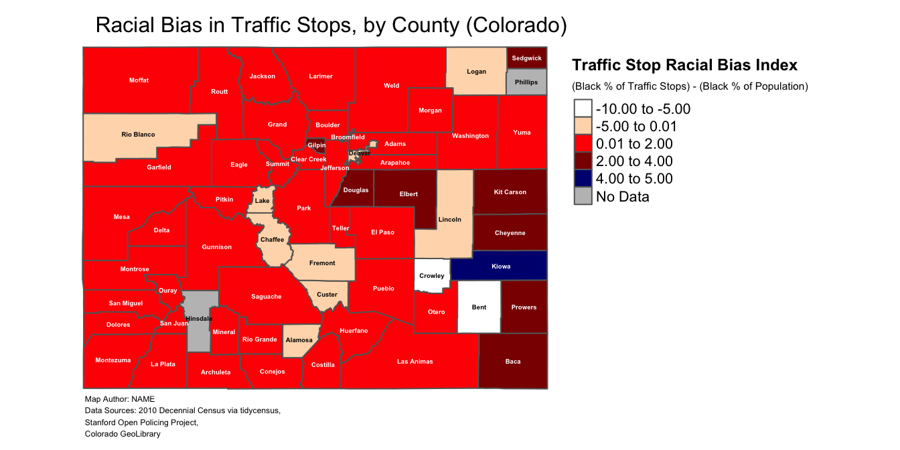
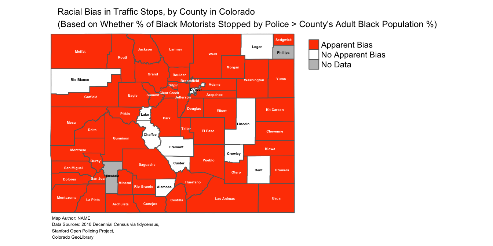

9 Summary scripts
This section summarizes the code we have written over the course of the tutorial to map county-level variation in possible anti-Black bias in Colorado’s 2010 traffic patrol stops. Section 9.1 provides the script to clean and process the original dataset published by the Stanford Open Policing Project, and get that data into a form that is suitable for mapping. Section Section 9.2 provides the script to create a map of the continuous “bias_index” variable, with counties labeled. Section 9.3 provides the script to create a map of a categorical variable that indicates whether a county’s value for “bias_index” is greater than zero, or less than/equal to zero, and then make a map of this categorical variable (with counties labeled).
9.1 Summary script to prepare, clean, and process data for mapping
# Read in Stanford police data for Colorado and assign to object
# named "co_traffic_stops"
co_traffic_stops<-read_csv("co_statewide_2020_04_01.csv")
# Create "Year" field based on existing "date" field
co_traffic_stops<-co_traffic_stops %>%
mutate(Year=substr(co_traffic_stops$date, 1,4))
# Filter 2010 observations and assign to a new object named
# "co_traffic_stops_2010"
co_traffic_stops_2010<-co_traffic_stops %>% filter(Year==2010)
# Compute county-level count of traffic stops by race and assign to object
# named "co_county_summary"
co_county_summary<-co_traffic_stops_2010 %>%
group_by(county_name) %>%
count(subject_race)
# Reshape the data so that the racial categories are transposed
# from rows into columns and assign the result to an object named
# "co_county_summary_wide"
co_county_summary_wide<-co_county_summary %>%
pivot_wider(names_from=subject_race, values_from=n)
# Creates a new column named "total_stops" in "co_county_summary_wide" that
# contains information on the total number of stops for each county
# (across all racial categories)
co_county_summary_wide<-co_county_summary_wide %>%
rowwise() %>%
mutate(total_stops=
sum(c_across(where(is.integer)), na.rm=TRUE))
# Selects "county_name", "black", and "total_stops" variables from
# "co_county_summary_wide"; then renames the "black" variable to
# "black_stops" for clarity; then removes counties that are named "NA"
# due to an error in the dataset
co_county_black_stops<-co_county_summary_wide %>%
select(county_name, black, total_stops) %>%
rename(black_stops=black) %>%
filter(county_name!="NA")
# Read in the pre-prepared demographic data from the 2010 decennial
# census and assign to an object named "co_counties_census_2010"
co_counties_census_2010<-read_csv("co_county_decennial_census.csv")
# Join "co_counties_census_2010" to "co_county_black_stops" and assign the result
# to an object named "co_counties_census_trafficstops"
co_counties_census_trafficstops<-full_join(co_county_black_stops,
co_counties_census_2010,
by=c("county_name"="County"))
# Use the information in "co_counties_census_trafficstops" to define new
# variables that will be used to compute the racial bias index:
# "black_stop_pct" (the black percentage of overall traffic stops within
# a county) and "black_pop_pct" (the black percentage of the county's
#over-17 population)
co_counties_census_trafficstops<-
co_counties_census_trafficstops %>%
mutate(black_stop_pct=((black_stops/total_stops)*100),
black_pop_pct=((total_black_pop_over17/total_pop_over17)*100))
# Calculate the bias index and include it as a new variable in
# "co_counties_census_trafficstops"
co_counties_census_trafficstops<-co_counties_census_trafficstops %>%
mutate(excess_stops_index=
black_stop_pct-black_pop_pct)
# Reads in Colorado county shapefile and assigns the shapefile to a new object
# named "co_counties_shapefile"
co_counties_shapefile<-st_read("tl_2019_08_county.shp")
# Join "co_counties_census_trafficstops" to "co_counties_shapefile" using
# "GEOID" as the join field; assign the result to a new object named #
# "county_shapefile_biasIndex"
county_shapefile_biasIndex<-full_join(co_counties_shapefile, co_counties_census_trafficstops, by="GEOID")9.2 Summary script for map of continuous “bias_index” variable
# creates color vector
my_colors<-c("white", "peachpuff", "red1", "red4", "navy") # defines color palette
# make a map of the continuous "bias_index" variable
traffic_bias_map_continuous_labeled<-
tm_shape(county_shapefile_biasIndex)+ # specifies name of object containing data to be mapped
tm_polygons(col="bias_index", # specifies variable to be mapped
palette=my_colors, # specifies color palette to be used in map
title="(Black % of Traffic Stops) - (Black % of Population)", # creates legend subtitle
textNA="No Data", # specifies label for NA data values
n=5, # specifies number of data partitions
breaks=c(-10,-5, 0.01, 2, 4, 5))+ # specifies legend breaks
tm_layout(frame=FALSE, # removes bounding box
legend.outside=TRUE, # places legend outside map domain
legend.text.size=0.68, # sets size of non-title legend text
legend.title.size=0.75, # sets text size for legend subtitle
title="Traffic Stop Racial Bias Index", # sets legend main title
title.size=0.75, # sets text size for legend main title
title.fontface = 2, # makes legend title text bold
main.title="Racial Bias in Traffic Stops, by County (Colorado)", # sets main title for map
main.title.position=0.03, # sets position of main title
main.title.size=1, # sets text size for map's main title
attr.outside=TRUE)+ # places credits outside map domain
tm_credits("Map Author: NAME\nData Sources: 2010 Decennial Census via tidycensus,\nStanford Open Policing Project,\nColorado GeoLibrary ", # sets credits text
position=c(0.02,0.01), # sets credits position
size=0.38)+ # sets credits size
tm_text("NAME", # specifies the name of the variable in spatial dataset containing desired polygon labels
size=0.30, # sets size of labels
fontface=2) # makes polygon labels bold# Prints map
traffic_bias_map_continuous_labeled
9.3 Summary script for categorical map
# Makes categorical variable based on continuous "bias_index" variable;
# this categorical variable is named "apparent_bias", and is coded as
# "Apparent Bias" if "bias_index">0 and coded as "No Apparent Bias" if "bias_index"<=0
county_shapefile_biasIndex<-
county_shapefile_biasIndex %>%
mutate(apparent_bias=ifelse(bias_index>0, "Apparent Bias",
"No Apparent Bias"))
# Makes categorical map based on "apparent_bias" variable and assigns this
# map to object named "traffic_bias_map_categorical"
traffic_bias_map_categorical<-
tm_shape(county_shapefile_biasIndex)+ # specifies name of spatial object containing data to be mapped
tm_polygons(col="apparent_bias", # specifies name of variable to be mapped
title="", # eliminates legend title
palette=c("orangered1", "white"), # sets color scheme for categories
textNA="No Data")+ # specifies label for NA data values
tm_layout(frame=FALSE, # removes map bounding box
legend.outside=TRUE, # places legend outside map domain
main.title="Racial Bias in Traffic Stops, by County in Colorado\n(Based on Whether % of Black Motorists Stopped by Police > County's Adult Black Population %)", # sets main title for map
main.title.position=0.03, # sets position for map's main title
main.title.size=0.75, # sets size for map's main title
attr.outside=TRUE)+ # sets map credits outside map's domain
tm_credits("Map Author: NAME\nData Sources: 2010 Decennial Census via tidycensus,\nStanford Open Policing Project,\nColorado GeoLibrary ", # sets text for map credits
position=c(0.02,0.01), # Specifies location of map credits
size=0.38)+ # specifies size of map credit text
tm_text("NAME", # specifies the name of the variable in spatial dataset containing desired polygon labels
size=0.30, # sets size of labels
fontface=2) # makes polygon labels bold# prints categorical map
traffic_bias_map_categorical